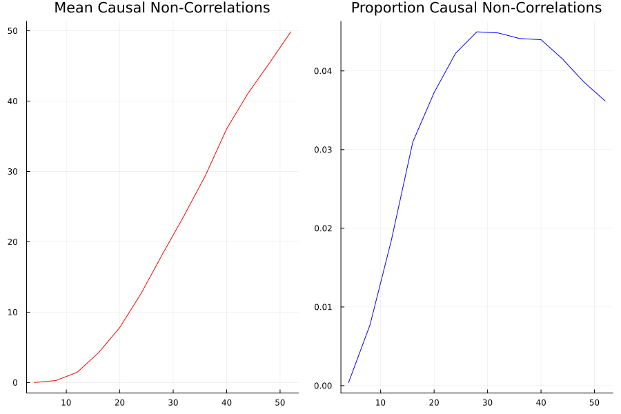

author: niplav, created: 2022-02-04, modified: 2024-04-15, language: english, status: on hold, importance: 4, confidence: unlikely
Absence of correlation implies causation ≤5% of the time in sparse-ish linear causal networks, but not never. The number of causal non-correlations first grows and then shrinks with the number of nodes in the causal network, with the maximum at ≈30. I can't explain why.
"Correlation ⇏ Causation" is trite by now. And we know that the contrapositive is also false: "¬Correlation ⇏ ¬Causation".
Spencer Greenberg summarizes:
All of this being said, while causation does not NECESSARILY imply correlation, causation USUALLY DOES imply correlation. Some software that attempts to discover causation in observational data even goes so far as to make this assumption of causation implying correlation.
I, however, have an inner computer scientist.
And he demands answers.
He will not rest until he knows how often ¬Correlation ⇒ ¬Causation, and how often it doesn't.
This can be tested by creating a Monte-Carlo simulation over random linear structural equation models with variables, computing the correlations between the different variables for random inputs, and checking whether the correlations being very small implies that there is no causation.
So we start by generating a random linear SEM with variables (code in Julia). The parameters are normally distributed with mean 0 and variance 1, but for now we'll assume there is no noise.
struct LinearSEM
g::SimpleDiGraph{Int64}
coefficients::Dict
end
We can decide how dense/sparse we want the SEM to be via the threshold
parameter, the probability that two different nodes have an edge
between them. The higher the threshold, the more edges in the SEM.
function random_linear_sem(n::Int, threshold::Float64=DEFAULT_THRESHOLD)::LinearSEM
edges_to_add = [(i,j) for i in 1:n, j in (i+1):n if rand() < threshold]
g = DiGraph(n)
coefficients = Dict(Edge(i,j) => randn() for (i,j) in edges_to_add)
for (i,j) in edges_to_add
add_edge!(g, i, j)
end
return LinearSEM(g, coefficients)
end
We can then run a bunch of inputs through that model, and compute their correlations:
function correlations(sem::LinearSEM, inner_samples::Int)::Matrix{Float64}
n = nv(sem.g)
input_nodes = findall(i -> indegree(sem.g, i) == 0, 1:n)
inputs = randn(inner_samples, length(input_nodes))
results = hcat([calculate_sem_values(sem, Dict(zip(input_nodes, inputs[i,:]))) |>
vals -> [vals[i] for i in 1:n]
for i in 1:inner_samples]...)'
cor_matrix = cor(results)
cor_matrx[diagind(cor_matrix)] .= 0
return abs.(cor_matrix)
end
We can then check how many correlations are "incorrectly small".
Let's take all the correlations between variables which don't have any causal relationship. The largest of those is the "largest uncaused correlation". Correlations between two variables which cause each other but are smaller than the largest uncaused correlation are "too small": There is a causation but it's not detected.
We can now take the correlations and separate them into correlations between pairs of variables with causal relationship (i.e., a directed graph through the DAG representing the SEM), and pairs of variables without causal relationships.
correlation=correlations(sem, inner_samples)
influence=Matrix(Bool.(transpose(adjacency_matrix(transitiveclosure(sem.g)))))
not_influence=tril(.!(influence), -1)
non_causal_cors=not_influence.*correlation
causal_cors=influence.*correlation
This gives us two distributions, the distribution of non_causal_cors
and the distribution of causal_cors, e.g. for SEMs with 48 variables:

One may notice that some variables that are not causing each other still have high correlations with each other, this is because they have a common cause. So we have to decide what it means for a correlation to be too small to be relevant.
I can see three different salient options to decide whether a correlation is small:
function misclassifications(sem::LinearSEM, innersamples::Int)::Int noncausalcors, causalcors=differentcors(sem, innersamples) return sum((causalcors .!= 0) .& (causalcors .< mean(noncausalcors))) end
And, in the outermost loop, we compute the number of misclassifications for a number of linear SEMs (with a threshold of 0.25, since 0.5 usually produces SEMs which are too dense):
function misclassified_absence_mc(n::Int, outer_samples::Int, inner_samples::Int)
return [misclassifications(random_linear_sem(n, 0.25), inner_samples) for i in 1:outer_samples]
end
So we collect a bunch of samples. SEMs with one, two and three variables are ignored because when running the code, they never give me any causal non-correlations. (I'd be interested in seeing examples to the contrary).
results=Dict{Int, Vector{Int}}()
Threads.@threads for i in size_range
println("Processing SEM size: $i")
results[i]=misclassified_absence_mc(i, sem_samples, input_samples)
end
return results
We can now first calculate the mean number of small causal correlations and the proportion of of small causal correlations correlations, using the formula for the triangular number:
result_means=[mean(values) for (_, values) in sort(results)]
result_props=[mean(values)/triangular_number(key) for (key, values) in sort(results)]

So it looks like at most 5% of causal relationships have a correlation that is "too small", which happens if the SEM has ≈30 variables, and that number shrinks with a larger SEM.
I find this very surprising: Is there a specific mathematical reason why SEMs with 30 variables have the highest number of causal non-correlations? The mean number of causal relationships with small correlations seems to grow quite steadily, so I'm not sure what's going on here.
Is the issue with the number of inner samples, are we simply not checking enough? But 10k samples ought to be enough for anybody—if that's not sufficient, I don't know what is.
But let's better go and write some code to check:
more_samples=Dict{Int, Vector{Int}}()
input_samples_range=2 .^ SAMPLE_POWERS
sem=random_linear_sem(sem_size, SPARSE_THRESHOLD)
Threads.@threads for input_sample in input_samples_range
println("Processing sample size: $input_sample")
more_samples[input_sample]=[misclassifications(sem, input_sample) for i in 1:DEFAULT_SEM_SAMPLES]
end
Plotting the number of causal non-correlations reveals that 10k samples ought to be enough, at least for small numbers of variables:
The densities fluctuate, sure, but not so much that I'll throw out the baby with the bathwater. If I was a better person, I'd make a statistical test here, but alas, I am not.
I don't know why causal non-correlations are so common, especially in linear SEMs.